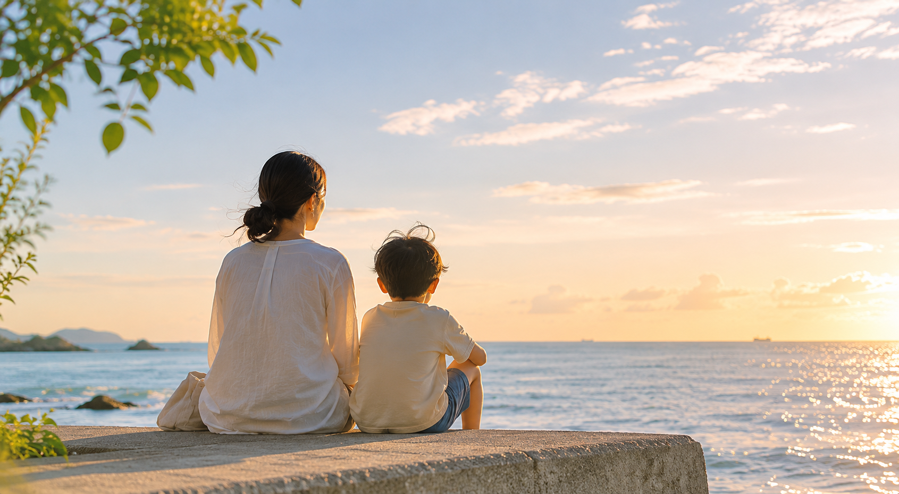
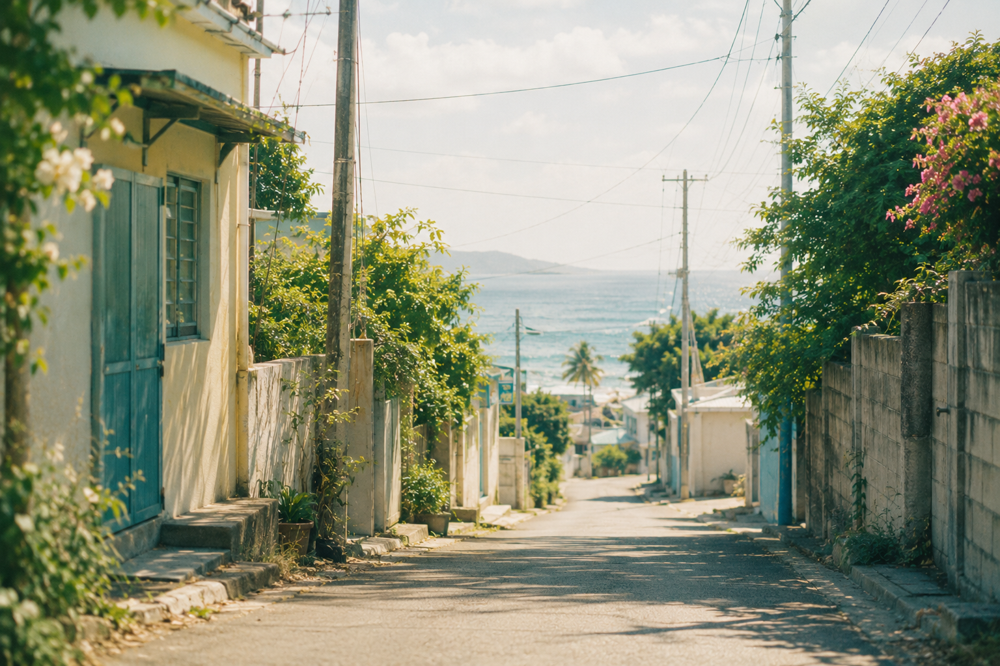
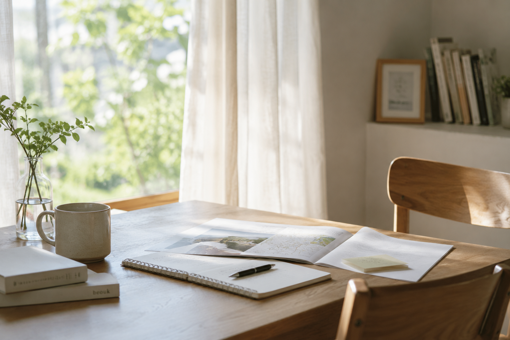

親子で未来を見るための海外体験
今の学校や進路の流れだけで、
この子の未来を考えていいのか。
そう感じ始めた親子のための海外体験です。
LINE登録だけで参加申込にはなりません
ただいま準備中
こんな迷いが、頭の中にありませんか
成績や出席だけでは、この子の状態を見きれない気がする。
みんなと同じ流れに乗ることが、本当にこの子に合っているのか分からない。
日本の学校や進路の当たり前に、親の私の方が少し違和感を持ち始めている。
国内の別環境も調べた。フリースクールやオルタナティブスクールも見た。
親子留学のブログも、一晩かけて読んだ。でも、自分の家族に当てはめるイメージが持てない。
夜、子どもが寝てから、また検索している。
「うちの子に合う環境」が何なのか、まだ言葉にできない。
まだ決めたいわけではない。
でも、このまま不安だけで未来を見ていたくない。
親は、読めない未来に不安になる。
子どもは、自分の未来を前向きに想像する材料がまだ少ない。
だから必要なのは、すぐに答えを決めることではなく、
親子で未来を見るための材料を増やすことだと考えています。
日本を否定することではありません。学校を否定することでもありません。
ただ、日本の学校・進路・普通の流れだけで見ていると、今見えている姿だけで、この子の未来まで狭く見えてしまうことがあります。本当は、環境が変われば見え方も変わるかもしれない。でも、見たことのない選択肢は、親にも想像しにくい。
だから親子で一度、その見方から少し離れて、別の世界を実際に見に行く。
日本にいると、親には
目の前の出口が見えやすい。
子どもが止まったとき、
親が先に答えを出せてしまう。
でも海外では、
親も分からないところから始まります。
注文が通じない。道を聞きたいけれど、何と言えばいいか分からない。親も少し固まる。
スマホを見せてみる。片言で試してみる。笑いながら、なんとか伝わる。
子どもの前で、親も「やってみる」側に立つ時間。
だから、子どもだけが「できない側」にならない。
親子で同じ"分からない"ところに立てる。
親が先に答えを出すのではなく、親子で一緒に「どうしようか」と考える時間が生まれる。そこに、親子で海外に行く意味があります。
答えを出す前に、いっしょに見てみる

国内の別環境を選ぶことも、大切な選択肢です。この海外体験は、それらの代わりではありません。
次の学び場をすぐに決めるためではなく、親子が一度、日本の学校・進路・普通の延長だけではない世界を見るためのものです。
海外が正解という意味ではありません。今の延長だけではない環境を、親子で一度見てみるための体験です。
不安だけで、この子の未来を見ないための材料を。
いつもの場所とは違う自分を、ひとつ知っておく経験を。
同じ"分からない"ところから、一緒に始める時間を。
場所が変わることで、いつもとは違う表情や動き方が出ることがあります。その小さな実感を、ひとつ持ち帰ることを大切にします。
なぜ海外を考えるのか、何を見に行くのかを整理する
親子で、いつもの前提が通用しにくい環境に立つ
現地で感じたことを、家族の次の一歩を考えるきっかけにする
このプロジェクトは、今すぐ海外を選ぶためのものではありません。
海外に行くかどうかを、今すぐ決める必要はありません。国内の別環境を見るのか、今の環境を整えるのか。その前に、家族で話し合うための材料を持っておく。
そのための先行案内です。
参加を決めていなくても大丈夫です。まずは、費用感・期間・現地で何を見るのかを知るだけでも構いません。
費用・日程・内容が整い次第、LINEで先行してご案内します。
